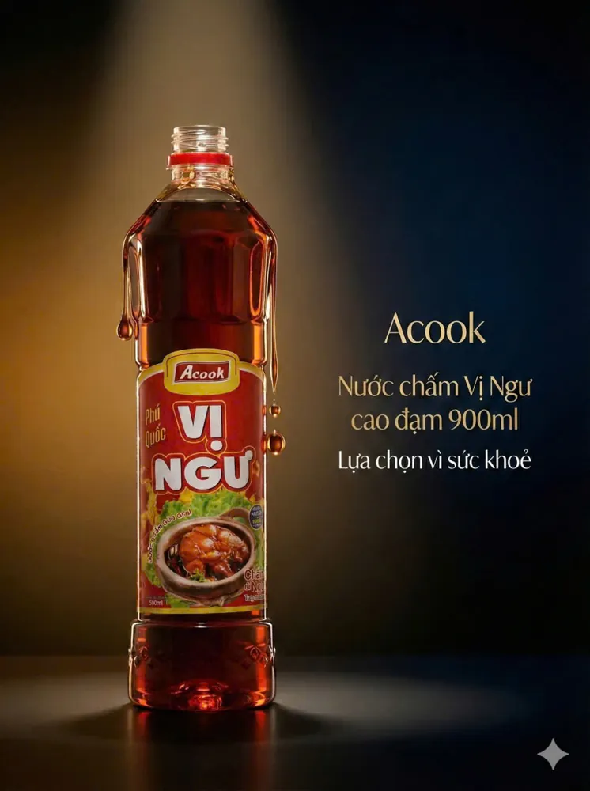

Quy trình sản xuất nước mắm: hành trình từ biển cả trở thành món gia vị không thể thiếu của người Việt
Quy trình sản xuất nước mắm của ngư dân thường bắt đầu từ việc đánh bắt cá tươi sống. Những loại cá như cá cơm hay cá thu là nguyên liệu chính để làm nước mắm. Sau đó, cá sẽ được phối trộn với muối biển tự nhiên và tiến hành ủ chượp trong thời gian dài. Đây là giai đoạn quan trọng, quyết định đến hương vị và chất lượng của sản phẩm cuối cùng.

Giới thiệu về quy trình sản xuất nước mắm của ngư dân
Nước mắm là gia vị không thể thiếu trong ẩm thực Việt Nam, mang hương vị đặc trưng và phong phú. Quy trình sản xuất nước mắm truyền thống đã được lưu giữ qua nhiều thế hệ, từ các ngư dân ven biển. Những người ngư dân không chỉ là những người đánh bắt cá mà còn là những nghệ nhân chế biến nước mắm. Họ đã phát triển một phương pháp sản xuất độc đáo, kết hợp giữa thiên nhiên và truyền thống, tạo ra những chai nước mắm thơm ngon, chất lượng.
Quy trình sản xuất nước mắm
Quy trình sản xuất nước mắm bao gồm nhiều công đoạn cụ thể, mỗi công đoạn đều mang ý nghĩa quan trọng trong việc tạo ra sản phẩm chất lượng. Dưới đây là các bước chi tiết:
- Chọn cá: Nguyên liệu chính để sản xuất nước mắm là cá. Các loại cá tươi ngon, chất lượng cao như cá cơm hay cá thu sẽ được lựa chọn kỹ lưỡng. Cá phải còn tươi, không có dấu hiệu hư hỏng để đảm bảo chất lượng nước mắm.
- Chọn muối: Muối biển tự nhiên, tinh khiết là yếu tố không thể thiếu trong quy trình. Muối giúp bảo quản cá và tạo ra môi trường lý tưởng cho quá trình lên men. Tỷ lệ muối và cá cũng cần được cân nhắc cẩn thận để đạt được hương vị mong muốn.
- Trộn đều cá và muối: Sau khi chọn được cá và muối, công đoạn trộn đều sẽ diễn ra. Cá và muối sẽ được trộn theo tỷ lệ đã định trước, đảm bảo rằng mỗi miếng cá đều được phủ một lớp muối đồng đều.
- Ủ chượp: Đây là công đoạn quan trọng nhất trong quy trình sản xuất nước mắm. Hỗn hợp cá và muối sẽ được ủ trong các thùng gỗ lớn hoặc chum đất, nơi nhiệt độ và độ ẩm được kiểm soát. Thời gian ủ chượp có thể kéo dài từ vài tháng đến vài năm, tùy thuộc vào loại nước mắm muốn sản xuất.
- Phơi chượp: Trong thời gian ủ chượp, quá trình phân hủy diễn ra tự nhiên, tạo ra chất lỏng và hương vị đặc trưng. Sau khi đủ thời gian ủ, hỗn hợp sẽ được phơi dưới ánh nắng mặt trời, giúp tăng cường hương vị và màu sắc cho nước mắm.
- Rút mắm nhỉ: Sau khi chượp đã đủ thời gian, công đoạn rút mắm nhỉ sẽ được thực hiện. Nước mắm đầu tiên, hay còn gọi là mắm nhỉ, sẽ được rút ra và thường có hương vị tinh khiết nhất.
- Lọc mắm: Sau khi rút mắm nhỉ, nước mắm sẽ được lọc để loại bỏ cặn bã và tạp chất. Công đoạn này giúp sản phẩm cuối cùng trở nên trong sạch và tinh khiết hơn.
- Kiểm định và đóng chai: Cuối cùng, nước mắm sẽ được kiểm định chất lượng trước khi đóng chai. Những chai nước mắm đạt tiêu chuẩn sẽ được dán nhãn và đưa ra thị trường, sẵn sàng phục vụ người tiêu dùng.
Acooki - thương hiệu nước mắm nổi tiếng tại Việt Nam
Trong bối cảnh ngành hàng nước mắm ngày càng phát triển, thương hiệu Acooki đã nhanh chóng khẳng định được vị thế của mình trên thị trường. Được biết đến với chất lượng vượt trội và hương vị đặc trưng, Acooki sử dụng nguyên liệu hoàn toàn tự nhiên, đảm bảo không chứa hóa chất độc hại.
Acooki áp dụng quy trình sản xuất nước mắm truyền thống, kết hợp với công nghệ hiện đại để tạo ra những sản phẩm an toàn và chất lượng. Các sản phẩm của Acooki không chỉ được ưa chuộng trong nước mà còn xuất khẩu ra thị trường quốc tế, mang lại niềm tự hào cho ẩm thực Việt Nam.
Thương hiệu Acooki cam kết mang đến cho người tiêu dùng những chai nước mắm thơm ngon, chất lượng, góp phần làm phong phú thêm món ăn của gia đình. Với tiêu chí “Nguyên liệu tự nhiên, chất lượng hàng đầu”, Acooki đang không ngừng nỗ lực để phát triển và mở rộng thị trường, mang lại những trải nghiệm tuyệt vời nhất cho người tiêu dùng.
Đồng hành cùng chúng tôi
Chúng tôi, thương hiệu Acooki, không ngừng mở rộng và nâng cao chất lượng sản phẩm nước mắm của mình. Để đáp ứng nhu cầu ngày càng tăng của thị trường và mang đến những sản phẩm tốt nhất đến tay người tiêu dùng, chúng tôi tìm kiếm các đối tác hợp tác trong lĩnh vực gia công nước mắm.
Nếu bạn là một nhà sản xuất hoặc doanh nghiệp trong ngành thực phẩm, hãy cùng chúng tôi tạo ra những chai nước mắm thơm ngon, an toàn và chất lượng. Chúng tôi cam kết hỗ trợ bạn trong tất cả các giai đoạn sản xuất, từ lựa chọn nguyên liệu đến quy trình đóng chai và tiếp thị sản phẩm. Hợp tác với Acooki không chỉ mang lại lợi ích về kinh tế mà còn giúp nâng cao giá trị thương hiệu của bạn trong mắt người tiêu dùng.
Hãy liên hệ với chúng tôi ngay hôm nay để cùng nhau phát triển và mang đến những sản phẩm nước mắm chất lượng đến với thị trường!